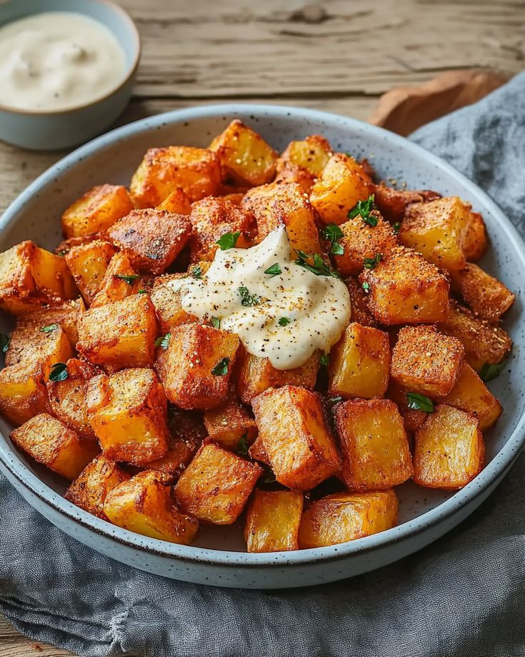

Patatas Bravas

Ingredientes:
- 1 patata grande (o 2 pequeñas)
- Aceite para freír (de oliva o girasol)
- Sal
- 1 cucharadita de pimentón dulce
- 1/2 cucharadita de pimentón picante (o cayena molida si quieres más fuego)
- 1/2 cucharada de harina
- 100 ml de caldo de ave o agua
- 1/2 diente de ajo (muy picadito)
- 1 cucharada de aceite de oliva
- Sal al gusto
- (Opcional) Un chorrito de vinagre para dar alegría
- Alioli casero o de bote, si te va la versión “mixta” con brava + alioli
Preparación:
- Pela y corta las patatas en cubos medianos (no muy pequeños).
- Lávalas bien bajo el grifo y sécalas a conciencia con un paño o papel de cocina.
- Fríelas primero a fuego medio (130-140°C) unos 8-10 minutos para que se hagan por dentro. Luego sube el fuego a tope para que queden doradas y crujientes por fuera.
- Escúrrelas sobre papel absorbente y échales sal.